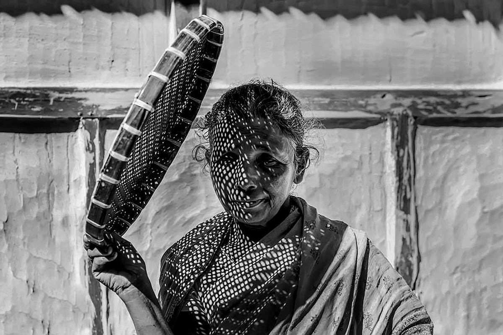

Belgesel Fotoğrafçılığı: Gerçeğin Kadrajdaki Hikayesi
Belgesel fotoğrafçılığı, bir hikaye anlatma yöntemi olarak fotoğrafçılık dünyasının önemli bir dalıdır. Belirli bir konu, olay ya da toplum kesitini belgeleme amacı taşıyan bu disiplin, gerçeklik üzerine kurulu bir sanattır. Bir yandan tarihi kayıt altına alırken diğer yandan izleyiciye derin duygusal ve düşünsel bağlantılar kurdurur.
Belgesel Fotoğrafçılığının Tanımı
Belgesel fotoğrafçılığı, genellikle toplumsal olayları, kültürel dinamikleri ya da bireysel hikayeleri belgelendirmek amacıyla gerçek ve doğal anları yakalamaya odaklanır. Amacı, süslenmiş ya da manipüle edilmiş görüntüler yerine, izleyicinin karşısına saf bir gerçeklik çıkarmaktır.
Tarihi ve Evrimi
Belgesel fotoğrafçılığın kökleri 19. yüzyıla dayanır. Endüstriyel devrim döneminde, Jacob Riis ve Lewis Hine gibi öncüler, yoksulluk ve çocuk işçiliği gibi toplumsal sorunları belgeleyerek bu disiplinin temelini attılar. Riis, “How the Other Half Lives” (Diğer Yarım Nasıl Yaşar) kitabı ile Amerika’daki yoksulluk koşullarını çarpıcı bir şekilde ortaya koyarken, Hine, fabrikalarda çalışan çocukların şartlarını gözler önüne sermiştir. 20. yüzyılda Henri Cartier-Bresson, “karar anı” kavramıyla belgesel fotoğrafçılığın estetiğine yeni bir boyut kattı. Teknolojinin ilerlemesiyle birlikte dijital fotoğrafçılık, bu sanat dalını çok daha geniş bir kitleye ulaştırdı.


Teknik ve Estetik Unsurlar
- Doğallık ve Gerçeklik: Belgesel fotoğrafçılığın ana prensibi, sahnenin veya olayın doğallığını bozmamaktır.
- Kompozisyon: Güzel bir kompozisyon yaratmak, görsel hikaye anlatımında önemlidir. Ancak bu, gerçekliği ön plana çıkarma amacına hizmet etmelidir.
- Işık: Doğal ya da mevcut ışığı kullanmak, sahnenin otantik havasını korumanın yollarından biridir.
- Sabır ve Gözlem: En iyi kareler genellikle beklenmedik anlarda gelir. Bir fotoğrafçı, doğru anı yakalamak için sabırla beklemelidir.
Etik Sorunlar
Belgesel fotoğrafçılığında etik sorular daima gündemdedir. Bir hikaye anlatırken, konu olan bireylerin mahremiyeti ve hakları korunmalıdır. Özellikle hassas durumları belgeleyen bir fotoğrafçı, kişilerin izni olmadan görüntüleme yapmaktan kaçınmalıdır. Görüntü manipülasyonu ya da çerçeve dışında kalan unsurları bilinçli olarak gizleyip izleyiciye yanlış bir algı yaratmak, belgesel fotoğrafçılığın temel prensiplerine aykırıdır. Bunun yanı sıra, çekilen görüntülerle yaratılabilecek olası etik sorunlar önceden öngörülmeli ve hikaye anlatımı etik bir perspektifle ele alınmalıdır.
Kullanılan Ekipman
Belgesel fotoğrafçılığında ekipman tercihi, genellikle minimalizm ve pratiklik üzerine yoğunlaşır.
- Kameralar: Hızlı ve hafif DSLR ya da aynasız kameralar tercih edilir.
- Lensler: Çok yönlü 24-70mm ya da 35mm gibi lensler genelde kullanılır.
- Ekstra Aksesuarlar: Yedek piller, hafıza kartları ve hafif bir çanta, fotoğrafçının olmazsa olmazlarındandır.
İyi Bir Belgesel Fotoğrafçı Olmak İçin
- Araştırma: Fotoğrafçı, belgeleyeceği konu veya topluluk hakkında derinlemesine bilgi sahibi olmalıdır.
- Empati: Konularının duygularını anlamak, hikayeye daha fazla derinlik katar.
- Disiplin: Uzun saatler boyunca çalışmak ve beklemek, sabır gerektirir.
- Bağlantı Kurma Yeteneği: Fotoğrafçı, hikayesini anlatmak için izleyiciyle ve fotoğraftaki insanlarla bağlantı kurabilmelidir.
Sonuç
Belgesel fotoğrafçılığı, sadece bir fotoğrafçılık dalı değil, aynı zamanda bir toplumsal sorumluluk şeklidir. Görünmeyeni göstermek, duyulmayanı duyurmak ve unutulmaya yüz tutan hikayeleri ölümsüzleştirmek, bu sanatın temel amacıdır. Doğru bir etik anlayış ve teknik bilgiyle, her fotoğrafçı kendi belgesel hikayesini oluşturabilir.